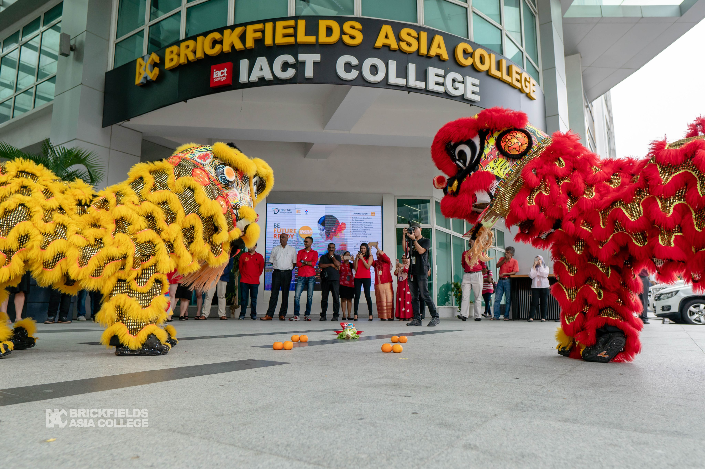
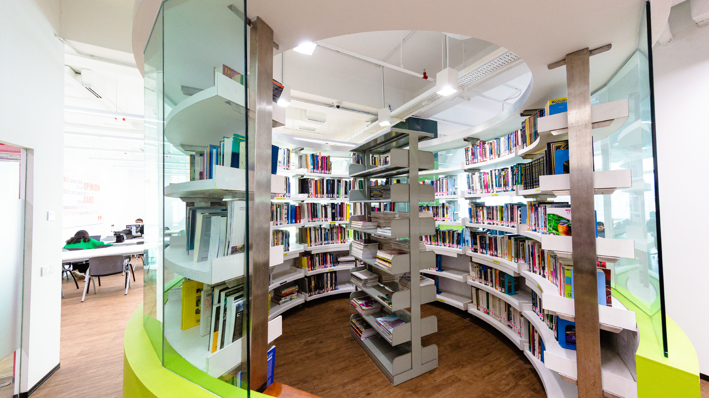
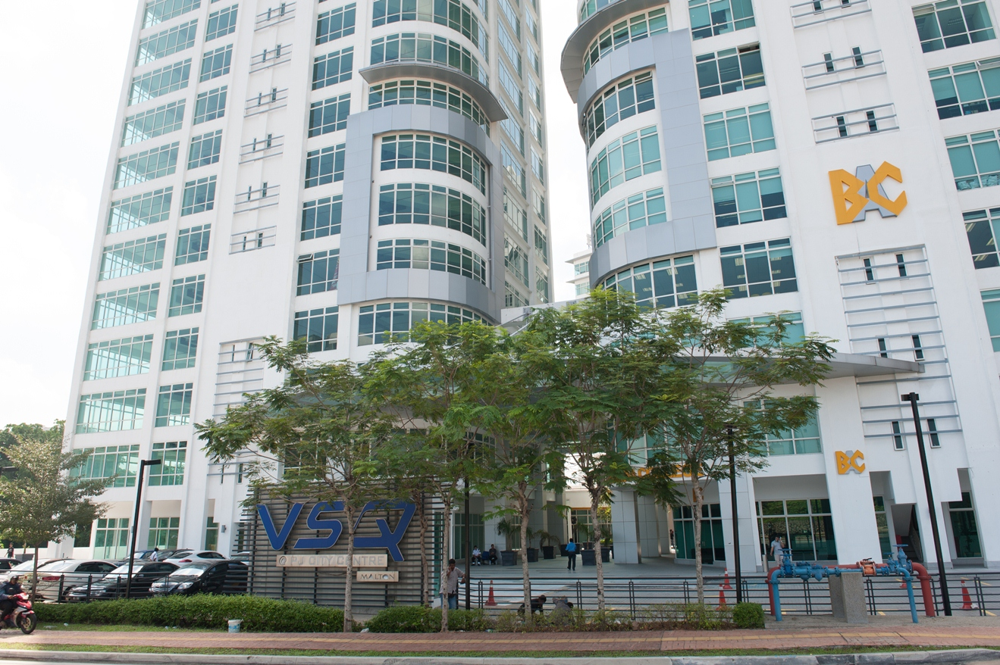

Established in 1991, Brickfields Asia College is the flagship institution of the BAC Education Group and is widely recognized as "The Nation’s No. 1 Law School." BAC has evolved from its origins in legal education into a comprehensive institution offering over 500 academic and professional programs. It is known for its strong international affiliations, particularly with top UK universities.
Operates across major hubs including the original campus in Kuala Lumpur (Brickfields) and the flagship Menara BAC in Petaling Jaya. Campuses serve as "one-stop hubs" featuring specialized moot courts, hybrid lecture halls, the ABACUS Digital Library (100,000+ resources), MonsterFit gyms, and "The Mansion" accommodation.



Founded in 2012 and joining the BAC Education Group in 2023, UNIMY is a private, AI-native technology university. It is dedicated to producing future-ready graduates through an industry-embedded curriculum. The university focuses heavily on digital technology, innovation, and career readiness, aligning its education model with the Fourth Industrial Revolution.
Housed in the Menara BAC campus in Petaling Jaya. Designed for a digital-first experience, featuring smart classrooms, industry-grade innovation labs, an Application Post-Quantum Cryptography Migration Lab, an ESG lab, and an e-sports arena.
IACT College is a premier specialist institution in creative communications. Founded in the 1970s by the Malaysian Advertisers Association (MAA) and the Association of Accredited Advertising Agents Malaysia (4As), it was built "by the industry, for the industry." Notably, it is the only college in Malaysia accredited by the International Advertising Association (IAA) in New York.
Integrated into the Menara BAC campus in Petaling Jaya. Provides industry-standard environments including broadcasting and video production studios, an Innovation Hub for creative start-ups, the Omnia Auditorium, and collaborative design spaces that mirror real-world creative agencies.
Veritas University College (VUC) is a highly innovative institution recognized as the "World's First Pay It Forward University." It champions a "Learn Different" philosophy that emphasizes a holistic, future-ready education. VUC is particularly well-regarded for its flexibility, catering heavily to working professionals and adult learners.
Based out of the central Menara BAC hub in Petaling Jaya. Known as a "green campus", it features state-of-the-art digital infrastructure for seamless online/blended learning delivery. Physical facilities include the Horizon Banquet Hall, multi-purpose seminar rooms, and start-up incubation hubs.
With roots tracing back to 1987, Reliance College is a pioneer in tourism, hospitality, and culinary arts education in Malaysia. Integrated into the BAC Education Group, the college is renowned for producing "industry-ready" graduates. It heavily emphasizes practical, real-world training and runs a unique "Earn While You Learn" (EWYL) initiative.
Operates within the BAC ecosystem, primarily utilizing the Menara BAC facilities in Petaling Jaya. The campus boasts highly specialized practical training spaces, including mock hotel rooms, state-of-the-art commercial training kitchens, and operational training restaurants.